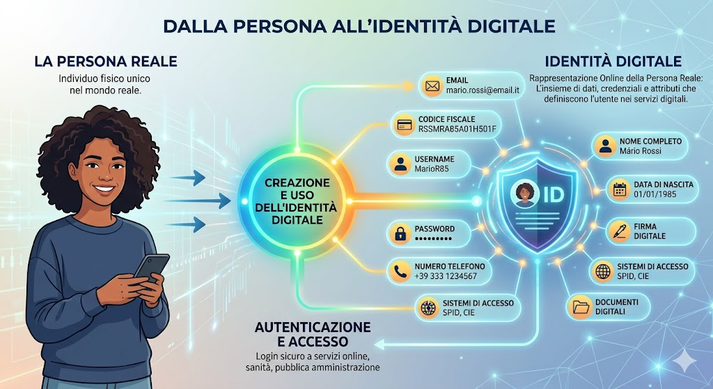
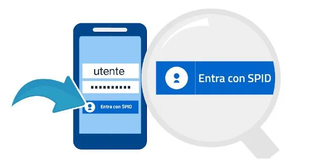
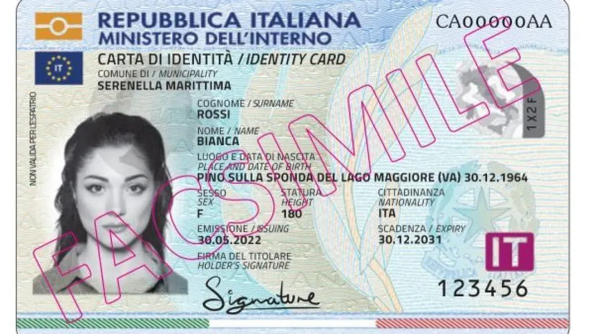
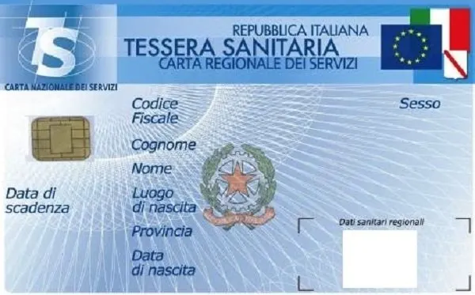
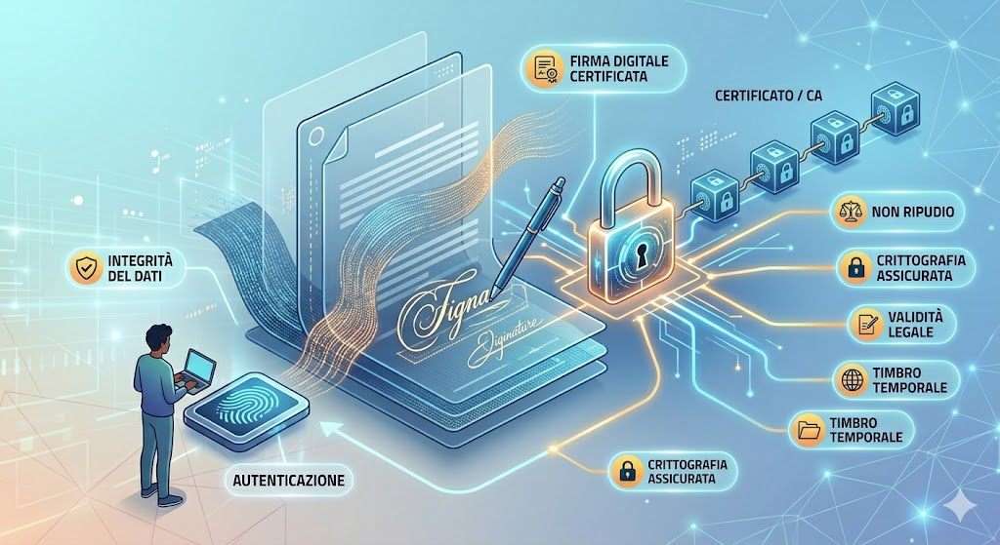
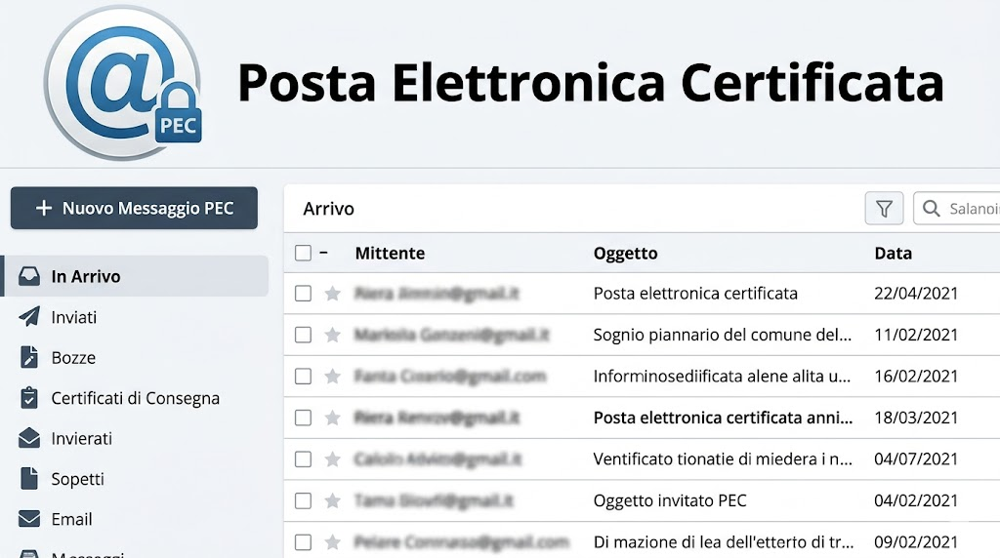
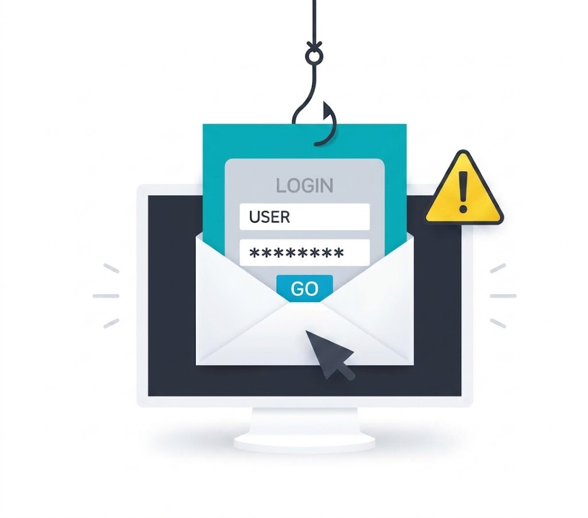
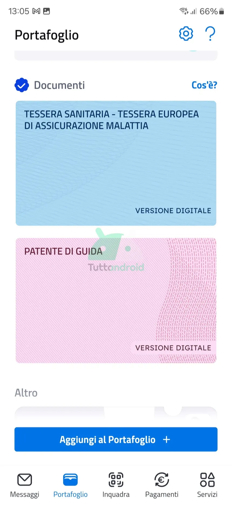

Cosa è, come funziona e come proteggerla -- Samuel Sema
L'Identità Digitale è l'insieme dei dati e delle informazioni, o attributi, che definiscono il titolare e costituiscono la rappresentazione virtuale dell'identità reale utilizzabile durante interazioni elettroniche con persone o sistemi informatici.
Quando pubblichiamo o condividiamo informazioni personali online stiamo creando o incrementando la nostra identità digitale. Al nostro nome online vengono associati tutti gli attributi che servono per definire la nostra personalita privata e professionale: data di nascita, informazioni sanitarie, indirizzo, numero di telefono, ID di accesso agli account, ecc.

Gli elementi base dell'identità digitale sono due:
L'identità digitale ha due facce principali:
"Noi siamo ciò che pubblichiamo e ciò che gli altri dicono di noi."
Navigando sul web non si può mai agire in maniera completamente anonima: nel web siamo tutti rintracciabili.
Gli strumenti di identità digitale attivi in Italia sono quattro principali:
A partire dal 28 febbraio 2021, SPID e CIE sono diventate le credenziali uniche per accedere ai servizi online della Pubblica Amministrazione. Le vecchie credenziali sono rimaste valide fino al 1 ottobre 2021.

Lo SPID è attivo in Italia dal 15 marzo 2016. Permette di accedere a tutti i servizi online della Pubblica Amministrazione con un unico sistema di credenziali (username e password), senza dover ricordare decine di password diverse né fare file agli sportelli.
Con un solo account è possibile accedere a oltre 5.300 tra amministrazioni locali e centrali, enti pubblici e agenzie. Funziona da qualsiasi dispositivo come computer, tablet e smartphone.
SPID può essere rilasciato da diversi IdP autorizzati, tra cui: Aruba, InfoCert, Lepida, Namirial, Poste Italiane, Register, Sielte, TeamSystem e TIM.
SPID è l'identità digitale certificata più utilizzata in Italia. Il numero di rilasci è passato da circa 9 milioni di utenti nel luglio 2020 a oltre 33 milioni a fine 2022, con una crescita del 23%. Nel 2022 si è superato il miliardo di accessi, con una crescita del 78% rispetto all'anno precedente.
La privacy dei dati è garantita e vigilata dal Garante per la protezione dei dati personali. Le informazioni comunicate al gestore di Identità non possono essere utilizzate per scopi commerciali nè cedute a terze parti senza autorizzazione dell'utente.

La CIE è il documento d'Identità dei cittadini italiani emesso dal Ministero dell'Interno e prodotto dal Poligrafico e Zecca dello Stato. Grazie a sofisticati elementi di sicurezza e anticontraffazione, permette l'accertamento dell'identità del possessore e l'accesso ai servizi online delle Pubbliche Amministrazioni sia in Italia che nei Paesi dell'Unione Europea.
La CIE contiene un microchip con ulteriori dati per la fruizione di servizi a valore aggiunto. È abbinata a un codice PIN fornito al momento del rilascio, utilizzabile per accedere a servizi online con elevato livello di criticita.
A differenza dello SPID (gratuito), la CIE ha un costo di 16,79 euro e viene rilasciata anche ai minori, fin dalla nascita. Dal 2022 e' possibile usare la CIE anche per servizi di livello 2, tramite username, password e codice OTP tramite l'app CieID.
Per la lettura della carta è necessario un lettore di carte elettroniche oppure uno smartphone con tecnologia NFC e l'app CieID.

La CNS è uno strumento che permette di identificare con certezza il cittadino online. Si tratta di una chiavetta USB o smart card dotata di microchip (e tecnologia contactless) che consente di accedere ai servizi messi a disposizione dalla pubblica amministrazione in internet.
Per i cittadini, la tessera sanitaria ha anche valore di CNS e, tramite un lettore di carte elettroniche, offre l'accesso a servizi come INPS, INAIL e Agenzia delle Entrate.
Le CNS erogate a imprese e professionisti permettono anche di consultare le informazioni relative alla propria azienda nel Registro Imprese.
Dal 1 ottobre 2021, insieme a SPID e CIE, è uno dei tre sistemi ufficiali per accedere ai servizi online delle pubbliche amministrazioni.

La firma digitale si basa su tecniche di crittografia e permette di associare in modo sicuro una chiave digitale a documenti informatici (contratti, dichiarazioni, atti amministrativi), attribuendo loro validità legale.
Ha lo stesso valore legale di una firma autografa e garantisce:
Si ottiene dai prestatori di servizi fiduciari presenti negli elenchi di fiducia dei singoli Stati membri europei. I prodotti più comuni sono una smart card con certificato di firma o una chiavetta USB con sim card integrata contenente il certificato.

La PEC è un sistema informatico che permette di inviare e ricevere email con validità giuridica, equiparabili per legge a una raccomandata con ricevuta di ritorno. Identifica in maniera univoca mittente e destinatario, garantendo che il contenuto non sia modificabile.
Caratteristiche principali:
Una volta ottenuta la casella PEC, è possibile nominare il proprio domicilio digitale su INAD (Indice Nazionale dei Domicili Digitali) all'indirizzo domiciliodigitale.gov.it. Si accede con CIE, SPID o CNS e si inserisce l'indirizzo PEC.
| Caratteristica | SPID | CIE |
|---|---|---|
| Tipo | Credenziali digitali (username + password) | Documento fisico con chip elettronico |
| Chi lo rilascia | Identity Provider privati (Aruba, Poste Italiane, ecc.) | Ministero dell'Interno / Comune di residenza |
| Costo | Gratuito | 16,79 euro |
| Età minima | 18 anni | Fin dalla nascita |
| Livello sicurezza massimo | Livello 3 (solo alcuni IdP) | Livello 3 (di default) |
| Dispositivo necessario | Smartphone o PC con app IdP | Smartphone NFC o lettore smart card |
| Valido in UE | Solo in Italia | Si, anche in altri Paesi UE |
| Firma documenti online | Si | Si |
L'impronta digitale è la traccia che lasciamo ogni volta che navighiamo online. Ogni click, ogni post, ogni ricerca contribuisce a costruire la nostra reputazione digitale.
Anche senza perdita di denaro, un attacco alla credibilita può danneggiarci a livello professionale o privato. La comparsa di video compromettenti sui social, l'invio di mail denigratorie o la pubblicazione di post offensivi sui profili aziendali possono creare un danno che richiede tempo e denaro per essere risolto.
L'accesso ai conti bancari non sempre è una frode che si scopre rapidamente, soprattutto se gli hacker agiscono gradualmente. Non si vedrà una transazione massiccia che fa scattare gli allarmi, il che espone a pericoli maggiori.
Se l'Identità digitale viene rubata, un criminale informatico potrebbe agire per conto nostro. Un esempio noto è il Business Email Compromise (BEC): l'identità di un CEO viene usata per inviare mail ai dipendenti richiedendo trasferimenti di denaro.
Ottenere le chiavi d'accesso agli account o ai conti permette ai criminali informatici di attuare frodi di vario tipo. Ecco le principali:
Inizia con una email o altra comunicazione fraudolenta che sembra provenire da un mittente affidabile (es. la propria banca). La vittima viene persuasa a fornire informazioni riservate su un sito truffa o a scaricare un malware. È una delle forme di frode più diffuse ed efficaci.
Truffa effettuata tramite telefonate. I malfattori si fingono dipendenti della banca e invitano l'utente a fornire dati sensibili. La voce umana può essere sostituita da un messaggio preregistrato.
Truffa effettuata tramite SMS che sembrano provenire dalla banca. Invitano l'utente a cliccare su un link o scaricare un file per fornire dati sensibili.
Tecnica di social engineering che prevede l'utilizzo di un dispositivo di memorizzazione infetto (es. una chiavetta USB contenente malware) per sferrare un attacco informatico.
Il criminale si avvale di tecniche di social engineering per convincere l'utente a cedere i propri dati, o di tecniche di hacking per appropriarsene all'insaputa della vittima. Può portare alla creazione di account fittizi, al furto dell'Identità di una persona defunta o alla creazione di fake identity.


L'IT-Wallet è un portafoglio digitale che consentirà di conservare nel proprio smartphone la versione digitale di tutti i principali documenti personali. Non si pone come sostituto di SPID e CIE, ma li conterrà al suo interno diventando lo strumento principale per interagire con la Pubblica Amministrazione.
Documenti integrabili nell'IT-Wallet:
IT-Wallet funziona tramite l'app IO e richiede l'uso di SPID o CIE per l'accesso. I documenti sono protetti da codice o impronta digitale e possono essere bloccati in caso di furto o smarrimento del telefono. Entro il 2026 sarà integrato con i sistemi di Identità digitale europei, permettendo ai cittadini di usufruire dei servizi online negli altri Paesi UE.
È in discussione la possibilita di ridurre il ruolo dello SPID a favore della CIE come unica Identità digitale nazionale gestita dallo Stato.
Ecco alcune delle principali applicazioni pratiche:
| Servizio | Cosa si può fare |
|---|---|
| Fascicolo Sanitario Elettronico | Consultare esami, ricette, presentare esenzioni, prenotare visite |
| Agenzia delle Entrate | Consultare il cassetto fiscale, dichiarazioni dei redditi, fatture ricevute |
| INPS | Cedolini della pensione, CU, fascicolo previdenziale, NASPI |
| Agenzia delle Riscossioni | Posizione debitoria, rateizzazione, rottamazione cartelle |
| PagoPA | Pagamenti verso la Pubblica Amministrazione |
| App IO | Gestione di tutti i servizi pubblici digitali in un unico canale |
| ANPR | Certificati anagrafici, cambio di residenza, visura dei propri dati |
| ACI | Visure PRA, codice della strada digitale, bollo auto |
| Portale Servizi Lavoro | Dimissioni volontarie online |
| Bonus governativi | Bonus revisione auto, bonus trasporti, 18App per neo-maggiorenni |